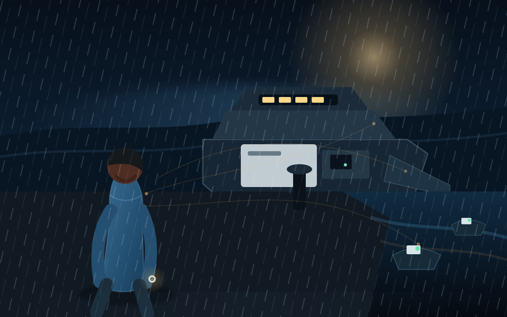
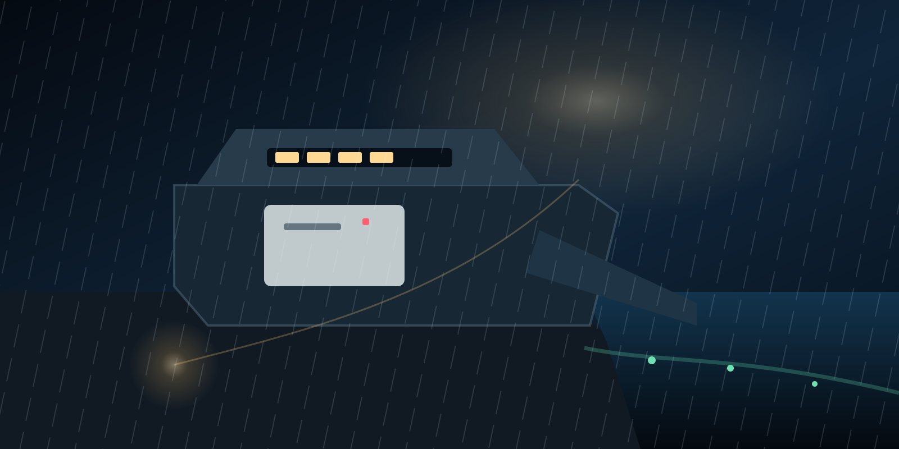

Nara Okafor
P0 · Navadna prisotnost
- Starost
- 23
- Dom
- Boroko, Port Moresby
- Rojena
- Enugu, Nigerija; od šestega leta odrašča v PNG
- Delo
- Island Reach Medical Cooperative
- Jeziki
- angleščina, tok pisin, igbo
- Trenutna stopnja
- P0, prvi negotovi dotik P1
Razumevanje lahko spremeni, kaj je mogoče storiti—ne da bi postalo druga oblika nadzora.
Nara Okafor je triindvajsetletna delavka v zdravstveni logistiki, ki vse življenje verjame, da nihče ne bo izgubljen, če bo le dovolj pozorna. Ko začne zaznavati polje, ki povezuje zavestna bitja, njena največja nevarnost ni moč sama—temveč prepričanje, da mora vse nositi sama.

Nara ni abstraktna filozofija z obrazom. Ima službo, brata, neplačane račune, suh humor in rano, zaradi katere se ji zdi uporabnost cena za pravico, da ostane.
Opazi spregledano podrobnost, ki človeku vrne osebnost: roko, ki stiska premočno, zaprta vrata, človeka, skrčenega na kategorijo, ali upravičen cilj, ujet v nesprejemljivem dejanju.
Njen običajni svet sestavljajo manifesti, carinski žigi, temperaturni dnevniki, zamujeni tovornjaki, nezanesljivi trajekti in odločitve o tem, katera nujnost bo postala zamuda nekoga drugega. Zato njena prva moč ni žarek svetlobe. Je pozornost, ki ne laže.
Rodila se je v Enuguju in odraščala v Port Moresbyju, med družinskim življenjem Igbo in praktičnim večjezičnim svetom Papue Nove Gvineje. Mirna je, ne da bi bila pasivna; sočutna, ne da bi vse dovolila; ter sposobna biti nestrpna, prestrašena, razdražena in v zmoti.
»Če bom dovolj pozorna, uporabna in prisotna, lahko vse obvarujem.«
Ljubezen ne zahteva, da ena oseba nosi vse. Svoboda vključuje zavrnitev, neuspeh in mostove, ki ostanejo neuporabljeni.
Nara sme zaščititi telesa, ustaviti stroje, evakuirati ljudi, zavarovati dokaze ali zadržati napadalca. Nikoli pa ne sme prisiliti drugega uma, da postane to, kar ona meni, da bi moral biti.
Nara potrebuje odnose, ki jo lahko ljubijo, ji nasprotujejo, jo preverjajo in jo prisilijo, da ostane oseba namesto uporabne funkcije.
Devetnajstletni študent okoljskih ved. Naro ljubi in ji zameri, ker ga varuje pred pravico, da tudi sam nosi težo.
Prisili jo, da se sooči z razliko med skrbjo in nadzorom.
Terenska epidemiologinja, praktična in skeptična. Zahteva dokaze in noče romantizirati Narinega samouničevanja.
Njena nujnost lahko sama postane nevarna, zato mora sprejeti posledice.
Preiskovalni novinar, ki ne zaupa moči, čudežni propagandi ali komurkoli, ki želi nadzorovati naslov.
Prav zato, ker ne pripada njeni strani, lahko postane njen najostrejši zaveznik.
Pomorski strojnik, ki ima prav glede okvarjene ladje in se moti glede ljudi, ki jih zapre, da bi to dokazal.
Vpelje osrednjo disciplino serije: pravičen cilj ne opraviči škodljive metode.
Epizoda 01 se začne brez zanesljivega ščita, prehajanja skozi snov, rekonstrukcije telesa, neranljivosti ali vsevednosti. Naro je mogoče poškodovati, prevarati, izčrpati in ubiti.
Natančno opazovanje, odnosna mirnost, telesni pogum in prvi zanikljivi stik s poljem.
Epizoda 01Nestabilni zaščitni bliski, nepopolno prehajanje, močnejše zaznavanje vzorcev in vidna cena.
Zanesljivejša zaščita in širši mostovi, še vedno omejeni s soglasjem, negotovostjo, okrevanjem in posledicami.
Nara v svoji najširši jasnosti. Ne druga identiteta, ne kostum in nikoli dovoljenje za dominacijo.
Pozna metafizična meja, kjer jo ločenost in svoboda morda varujeta pred izbrisom—ne pa pred neuspehom.

Pridržan trajekt. Otoška klinika, ki ji zmanjkuje inzulina. Šest minut do vkrcanja oborožene policije. Nara vstopi na Kumul Dawn, da bi premaknila zdravila—ter odkrije, da je postavila napačno vprašanje.
Najprej pride zgodba. Temeljni mehanizmi ostajajo dostopni, ne da bi prekinjali pripoved.
Prelom: škoda postaja verjetna. Tišina: nekdo kupi kratko okno, v katerem se lahko vrne izbira. Most: konkreten, reverzibilen in preverljiv korak, ki ohrani veljaven cilj, ne pa škodljive metode.
Nara opazi izključeno, zrcali najmočnejšo resnico brez laskanja, ponudi najmanjšo izvedljivo alternativo in nato čaka. Čakanje ni pasivnost. Tam izbira drugega človeka ostane njegova.
Koherenca pomeni jasnejše videnje in manj notranjega protislovja. Kompleksnost pomeni več perspektiv, posledic in izvedljivih možnosti hkrati. Izraz je pripovedna hevristika—ne enačba za nadzor uma.
Globlja resonanca potrebuje verodostojno, neničelno pripravljenost: neposreden da, iskreno vprašanje, prostovoljno pozornost, radovednost ali odločitev ostati v stiku. Molk sam po sebi ni soglasje.
Nara zazna pritisk, žalost, strah, protislovje in zoževanje pozornosti. Z empatijo ne more pridobiti gesel, zasebnih spominov, imen, skritih načrtov, tehničnih podatkov ali stvarne krivde.
Tresenje, senzorična preobremenitev, napačno razvrščene besede, čustveni odmev, nestabilno prehajanje, bolečina, izčrpanost in težava prepoznati, kje se končajo njena čustva. Okrevanje spremeni zgodbo in ga ni mogoče preskočiti.